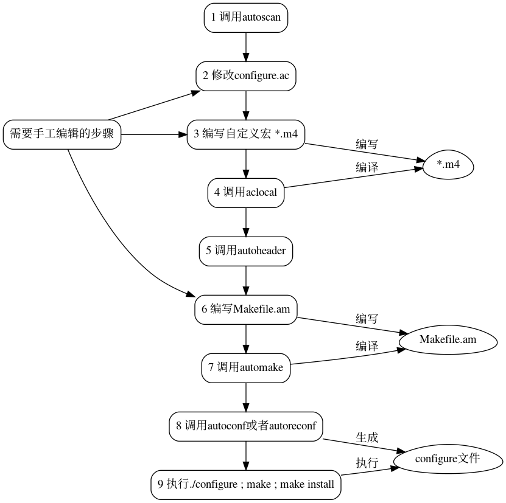

Automake
Table of Contents
1 概览

2 Automake流程
2.1 步骤
- 首先在源码根目录调用 autoscan， 生成configure.scan脚本，然后将此文件重命名为configure.ac(或configure.in,早期使用.in后缀)
- 修改【configure.ac】，利用autoconf提供的各种M4宏，配置项目需要的各种自动化探测项目。
- 编写【自定义宏】，建议每个宏一个单独的*.m4文件
- 调用aclocal收集configure.ac中用到的各种非Autoconf的宏，包括自定义宏
- 调用autoheader，扫描configure.ac(configure.in)、acconfig.h（如果存在），生成config.h.in宏定义文件，里面主要是根据configure.ac中某些特定宏(如AC_DEFINE)生成的#define和#undefine宏，configure在将根据实际的探测结果决定这些宏是否定义
- 按照automake规定的规则和项目的目录结构，编写一个或多个【Makefile.am】(Makefile.am数目和存放位置和源码目录结构相关)，Makefile.am主要写的就是编译的目标及其源码组成
- 调用automake，将每个Makefile.am转化成Makefile.in，同时生成满足GNU编码规范的一系列文件（带-a选项自动添加缺少的文件，但有几个仍需要自己添加，在执行automake前需执行touch NEWS README AUTHORS ChangeLog）。如果configure.ac配置了使用libtool(定义了AC_PROG_LIBTOOL宏（老版本）或LT_INIT宏)，需要在此步骤前先在项目根目录执行libtoolize –automake –copy –force，以生成ltmain.sh，供automake和config.status调用
- 调用autoconf，利用M4解析configure.ac，生成shell脚本configure。以上几步完成后，开发者的工作就算完成了，后面的定制就由开源软件的用户根据需要给configure输入不同的参数来完成
- 调用configure，生成Makefile，然后make && make install
2.2 宏解释
- AC_PREREQ([autoconf版本])
- 这个宏是用来检测autoconf的版本的
- AC_INIT([name], [version], [xxxxxx@email.com])
- 是个初始化宏，括号中内容分别为：要生成的软件名称，版本号，bug报告邮箱
- AC_CONFIG_SRCDIR([path/to/file]
- 将此项目中的文件和系统中可能存在的同名文件区分
- AC_CONFIG_HEADERS([config.h])
- 用来生成包含预处理定义的头文件， 一般在AC_INIT之后调用。
这个宏的目的是输出config.h，这是一个C的头文件，里面主要是包含很多宏定义#define，说到这里其实就很明确了，输出这个文件的目的就是提供各种相关的宏，而宏在代码中的作用就是#ifdef，也就是说：如果你的代码需要用到宏开关进行控制，那么就要输出这个文件。具体的使用方法如下：
- 首先确定代码中需要使用什么宏来进行开关定制，确定宏的名称，编写和宏相关的代码，且要包含config.h的头文件；
- 在configure.ac中的各种处理（例如AC_CHECK_***，AC_ARG_***）中使用AC_DEFINE宏定义C/C++的宏，名称和上面的相同；如果是使用 AC_CHECK_HEADERS，会自动添加宏定义；
- 执行完第7歩后，Autoconf就会自动生成config .h文件
- (no term)
- AC_CONFIG_FILES()
- AC_MSG_RESULT()
- 输出自定义内容
https://www.gnu.org/software/automake/manual/html_node/index.html